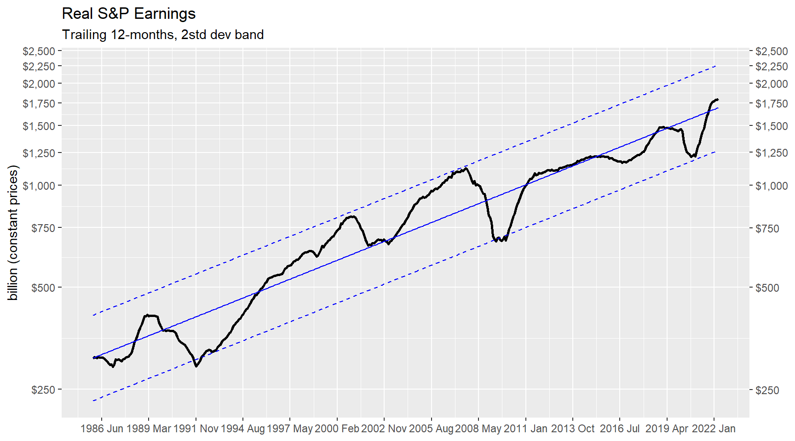
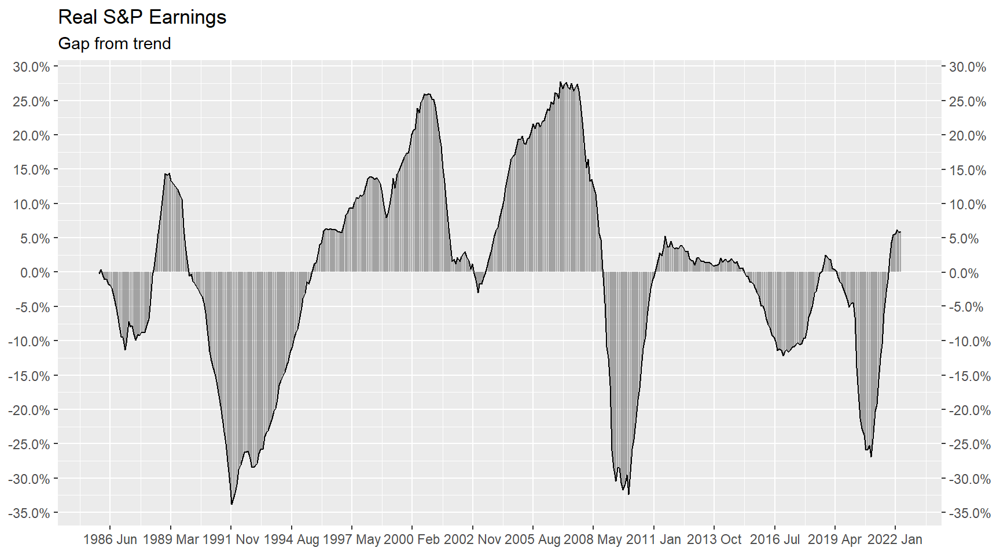
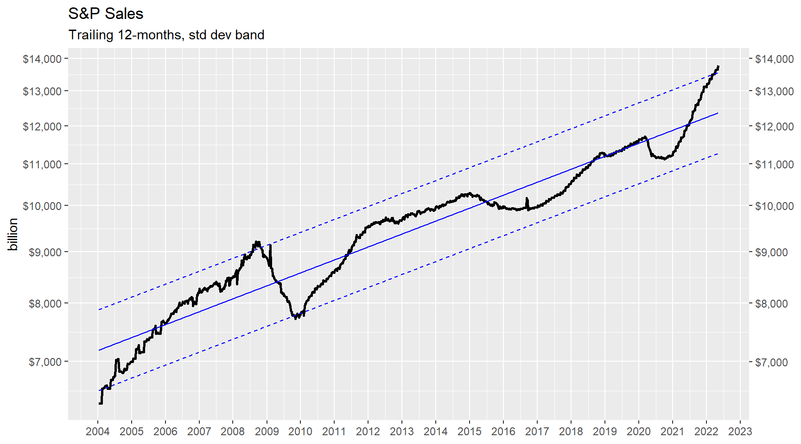
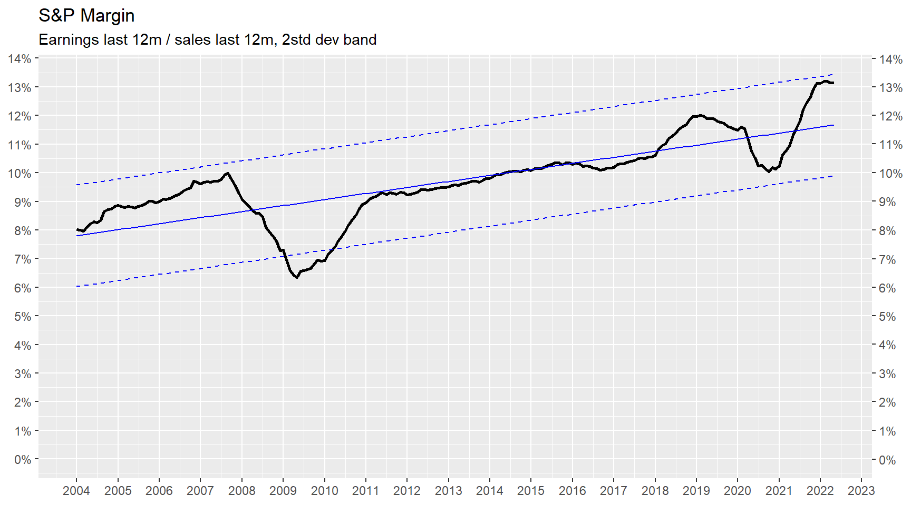
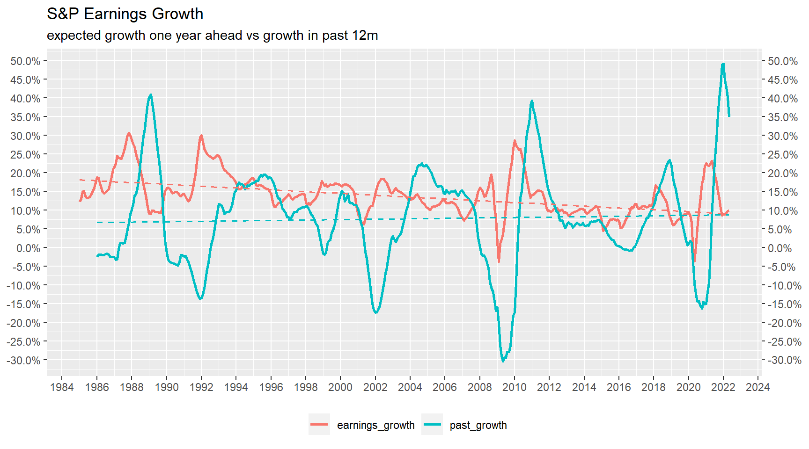
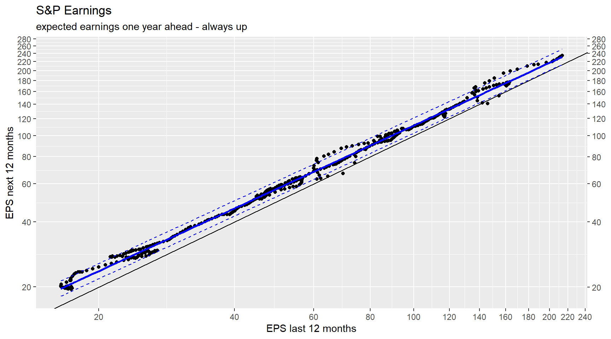
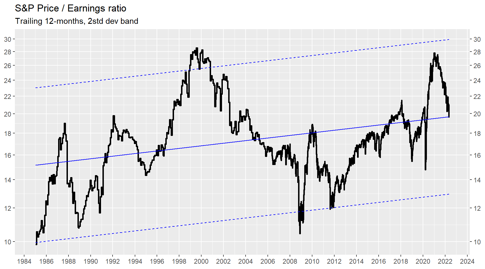
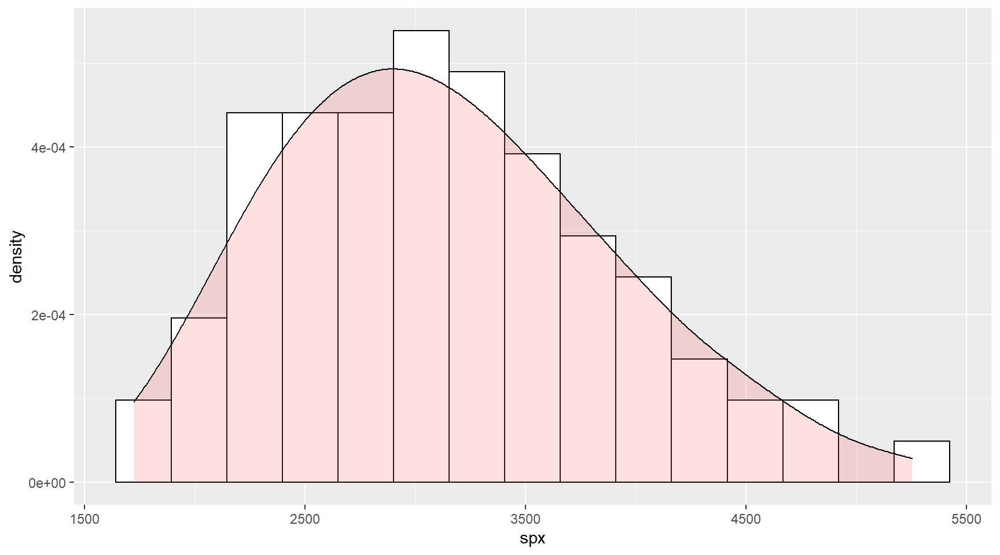

sandp-earnings
pgg1309
2022-05-11
Last updated: 2022-05-11
Checks: 7 0
Knit directory: lpm/
This reproducible R Markdown analysis was created with workflowr (version 1.7.0). The Checks tab describes the reproducibility checks that were applied when the results were created. The Past versions tab lists the development history.
Great! Since the R Markdown file has been committed to the Git repository, you know the exact version of the code that produced these results.
Great job! The global environment was empty. Objects defined in the global environment can affect the analysis in your R Markdown file in unknown ways. For reproduciblity it’s best to always run the code in an empty environment.
The command set.seed(20220204) was run prior to running
the code in the R Markdown file. Setting a seed ensures that any results
that rely on randomness, e.g. subsampling or permutations, are
reproducible.
Great job! Recording the operating system, R version, and package versions is critical for reproducibility.
Nice! There were no cached chunks for this analysis, so you can be confident that you successfully produced the results during this run.
Great job! Using relative paths to the files within your workflowr project makes it easier to run your code on other machines.
Great! You are using Git for version control. Tracking code development and connecting the code version to the results is critical for reproducibility.
The results in this page were generated with repository version 62e86cd. See the Past versions tab to see a history of the changes made to the R Markdown and HTML files.
Note that you need to be careful to ensure that all relevant files for
the analysis have been committed to Git prior to generating the results
(you can use wflow_publish or
wflow_git_commit). workflowr only checks the R Markdown
file, but you know if there are other scripts or data files that it
depends on. Below is the status of the Git repository when the results
were generated:
Ignored files:
Ignored: .Rhistory
Ignored: .Rproj.user/
Note that any generated files, e.g. HTML, png, CSS, etc., are not included in this status report because it is ok for generated content to have uncommitted changes.
There are no past versions. Publish this analysis with
wflow_publish() to start tracking its development.
Introduction
Total earnings
The chart below plots total S&P earnings since 1985 in nominal USD.
Total ‘real’ earnings
The chart below plots total S&P earnings since 1985 deflated by US CPI 
Real earnings growth and ‘gap’
O gráfico acima mostra que o lucro do S&P em termos reais cresceu em média no período 4.8% ao ano.
O gráfico abaixo mostra o desvio do EPS dessa tendência (‘gap’) de forma que é possível vislumbrar qual o ‘drawdown’ do lucro real ao longo dos ciclos.

Earnings vs GDP
Total sales

Sales vs GDP
Margin

Model
Earnings growth

Earnings next year always up
The chart below shows that forecast earnings are almost always higher than observed earnings in the last 12 months.

Drawdown


Forward PE is always a bit below trailing PE – which is another way of saying that expected earnings in the next 12 months are always above trailing 12 months earnings.
Model for future earnings
Nominal GDP
 The table below shows the implied nominal growth in GDP for the 80%
forecast range.
The table below shows the implied nominal growth in GDP for the 80%
forecast range.
# A tsibble: 1 x 4 [1Q]
index p10 .mean p90
<qtr> <dbl> <dbl> <dbl>
1 2023 Q4 -4.81 7.41 20.2Sales to GDP
# A tsibble: 1 x 4 [1M]
index p20 .mean p80
<mth> <dbl> <dbl> <dbl>
1 2023 Apr 0.471 0.535 0.600Margin
# A tsibble: 1 x 4 [1M]
index p20 .mean p80
<mth> <dbl> <dbl> <dbl>
1 2023 Apr 0.0980 0.117 0.135PE
# A tsibble: 1 x 4 [1M]
index p20 .mean p80
<mth> <dbl> <dbl> <dbl>
1 2023 Apr 13.5 16.8 20.1Assumptions

# A tibble: 81 × 6
gdp[,1] sales[,1] margin[,1] pe[,1] eps[,1] spx[,1]
<dbl> <dbl> <dbl> <dbl> <dbl> <dbl>
1 27234. 0.600 0.135 13.5 261. 3519.
2 27234. 0.600 0.135 16.8 261. 4386.
3 27234. 0.600 0.135 20.1 261. 5253.
4 25330. 0.600 0.135 13.5 243. 3273.
5 25330. 0.600 0.135 16.8 243. 4079.
6 25330. 0.600 0.135 20.1 243. 4886.
7 27234. 0.535 0.135 13.5 233. 3142.
8 27234. 0.535 0.135 16.8 233. 3916.
9 27234. 0.535 0.135 20.1 233. 4690.
10 27234. 0.600 0.117 13.5 225. 3036.
# … with 71 more rowsPE vs real rates
Series: pe
Model: TSLM
Residuals:
Min 1Q Median 3Q Max
-5.0013 -0.7058 0.1073 0.7189 2.5206
Coefficients:
Estimate Std. Error t value Pr(>|t|)
(Intercept) 18.36158 0.02356 779.48 <2e-16 ***
real10y -2.98939 0.03656 -81.77 <2e-16 ***
---
Signif. codes: 0 '***' 0.001 '**' 0.01 '*' 0.05 '.' 0.1 ' ' 1
Residual standard error: 1.022 on 1918 degrees of freedom
Multiple R-squared: 0.7771, Adjusted R-squared: 0.777
F-statistic: 6686 on 1 and 1918 DF, p-value: < 2.22e-16
R version 4.2.0 (2022-04-22 ucrt)
Platform: x86_64-w64-mingw32/x64 (64-bit)
Running under: Windows 10 x64 (build 19044)
Matrix products: default
locale:
[1] LC_COLLATE=English_United States.utf8
[2] LC_CTYPE=English_United States.utf8
[3] LC_MONETARY=English_United States.utf8
[4] LC_NUMERIC=C
[5] LC_TIME=English_United States.utf8
attached base packages:
[1] stats graphics grDevices utils datasets methods base
other attached packages:
[1] DatastreamDSWS2R_1.8.2 fable_0.3.1 feasts_0.2.2
[4] fabletools_0.3.2 tsibbledata_0.4.0 tsibble_1.1.1
[7] ggplot2_3.3.6 lubridate_1.8.0 tidyr_1.2.0
[10] dplyr_1.0.9 tibble_3.1.7 fpp3_0.4.0
[13] workflowr_1.7.0
loaded via a namespace (and not attached):
[1] httr_1.4.3 sass_0.4.1 jsonlite_1.8.0
[4] splines_4.2.0 foreach_1.5.2 warp_0.2.0
[7] bslib_0.3.1 assertthat_0.2.1 getPass_0.2-2
[10] distributional_0.3.0 highr_0.9 yaml_2.3.5
[13] numDeriv_2016.8-1.1 pillar_1.7.0 lattice_0.20-45
[16] glue_1.6.2 digest_0.6.29 promises_1.2.0.1
[19] colorspace_2.0-3 Matrix_1.4-1 htmltools_0.5.2
[22] httpuv_1.6.5 pkgconfig_2.0.3 purrr_0.3.4
[25] scales_1.2.0 processx_3.5.3 slider_0.2.2
[28] whisker_0.4 later_1.3.0 git2r_0.30.1
[31] mgcv_1.8-40 generics_0.1.2 farver_2.1.0
[34] ellipsis_0.3.2 tsbox_0.3.1 withr_2.5.0
[37] cli_3.3.0 magrittr_2.0.3 crayon_1.5.1
[40] evaluate_0.15 ps_1.7.0 fs_1.5.2
[43] fansi_1.0.3 nlme_3.1-157 MASS_7.3-57
[46] anytime_0.3.9 xts_0.12.1 progressr_0.10.0
[49] tools_4.2.0 data.table_1.14.2 lifecycle_1.0.1
[52] stringr_1.4.0 munsell_0.5.0 callr_3.7.0
[55] compiler_4.2.0 jquerylib_0.1.4 rlang_1.0.2
[58] grid_4.2.0 iterators_1.0.14 rstudioapi_0.13
[61] rappdirs_0.3.3 labeling_0.4.2 rmarkdown_2.14
[64] gtable_0.3.0 codetools_0.2-18 DBI_1.1.2
[67] R6_2.5.1 zoo_1.8-10 knitr_1.39
[70] tempdisagg_1.0 fastmap_1.1.0 utf8_1.2.2
[73] rprojroot_2.0.3 stringi_1.7.6 Rcpp_1.0.8.3
[76] vctrs_0.4.1 tidyselect_1.1.2 xfun_0.31